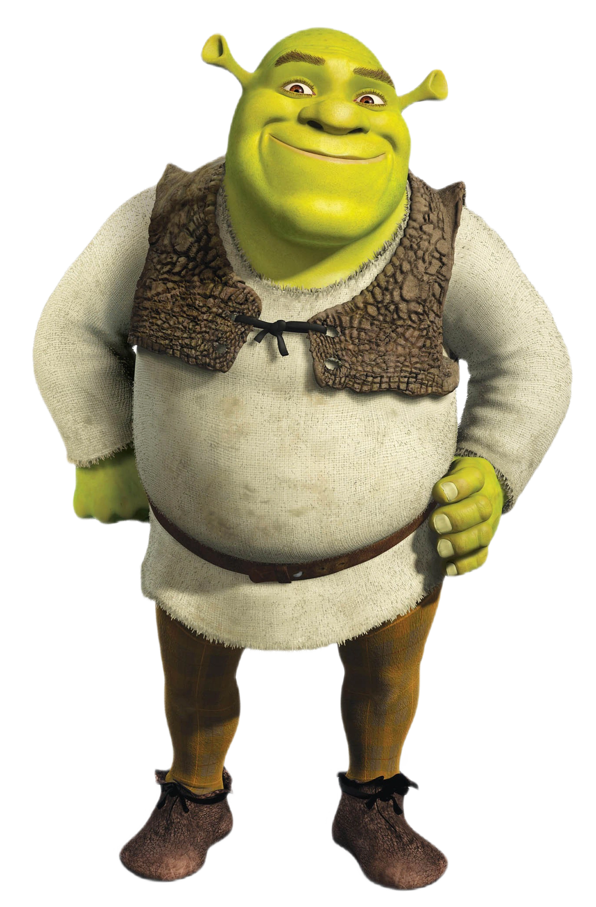
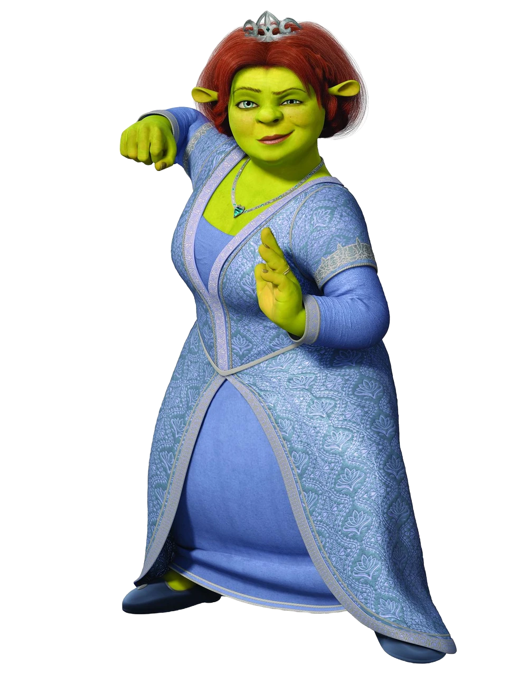
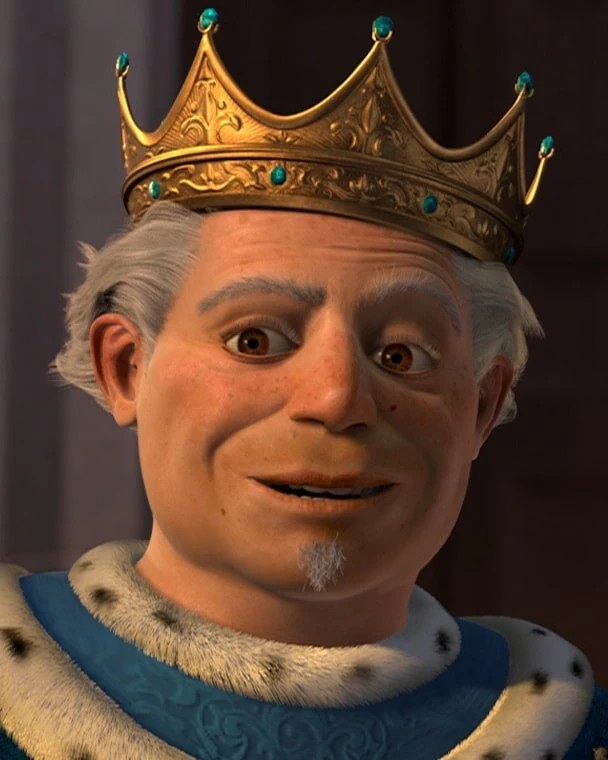
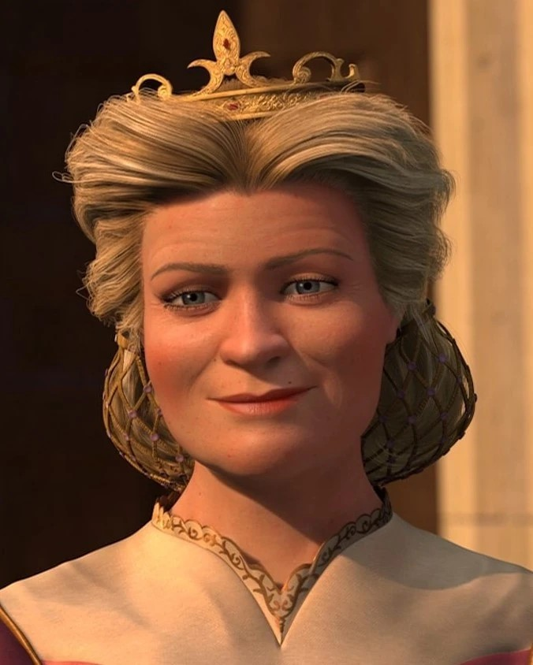

Шрек (англ. Shrek)
Заглавный герой одноимённой серии фильмов и игр, это огромный зелёный огр,
который живёт на болоте, в окрестностях города-государства Дюлок, населённого людьми,
животными, куклами и др. из разных европейских сказок и легенд.
Людей он, по доброте душевной, не ест, но его самолюбие греет тот факт,
что при виде него все бросаются врассыпную.
| Адрес: |
Шрек Огр
Болото Шрека, уч. 1,
Чаща Дюлока,
Тридевятое Королевство |
| Дата рождения: |
12 апреля 310 года по календарю Дюлока |
| Любимое блюдо: |
Жареные улитки с чесночным соусом. |
| Хобби: |
Пугание деревенских жителей и купание в грязи. |
e-mail: shrek_the_ogre@onionlayers.net

Фиона (англ. Fiona)
Персонаж серии мультфильмов Шрек, супруга Шрека c первой части, жена со второй и мать трёх маленьких огриков.
Также она принцесса Тридевятого королевства, дочь короля Гарольда и королевы Лиллиан.
| Адрес: |
Принцесса Фиона
Болото Шрека, уч. 1,
Чаща Дюлока,
Тридевятое Королевство |
| Дата рождения: |
3 марта 330 года по календарю Дюлока |
| Любимое блюдо: |
Жареные крылышки феникса. |
| Хобби: |
Пение и боевые искусства. |
e-mail: shrek_the_ogre@onionlayers.net

Король Гарольд (англ. king Harold)
человек знатного происхождения из семьи королей.
Правитель Тридевятого Королевства, муж королевы Лиллиан и отец Фионы.
В молодости был жабой. Истинный антагонист в "Шрек 2 ".
| Адрес: |
Его Величество Король Гарольд,
Королевский Дворец,
Главная Площадь, д. 1,
Тридевятое Королевство Тридевятое Королевство или
Далёкое-Далёкое Королевство
(англ. The Kingdom of Far Far Away) |
| Дата рождения: |
1 января 290 года по календарю Дюлока |
| Любимое блюдо: |
Комар-гриль с соусом из болотной тины. |
| Хобби: |
Составление законов и переодевание в лягушку. |
e-mail: king.harold@farfaraway.royal

Королева Лиллиан (англ. Queen Lillian)
королева Тридевятого Королевства, известная так же как мама Фионы и жена короля Гарольда.
| Адрес: |
Её Величество Королева Лиллиан,
Королевский Дворец,
Главная Площадь, д. 1,
Тридевятое Королевство Тридевятое Королевство или
Далёкое-Далёкое Королевство
(англ. The Kingdom of Far Far Away) |
| Дата рождения: |
14 февраля 300 года по календарю Дюлока |
| Любимое блюдо: |
Пирог с волшебными ягодами. |
| Хобби: |
Организация балов и воспитание Фионы. |
e-mail: queen.lillian@farfaraway.royal
